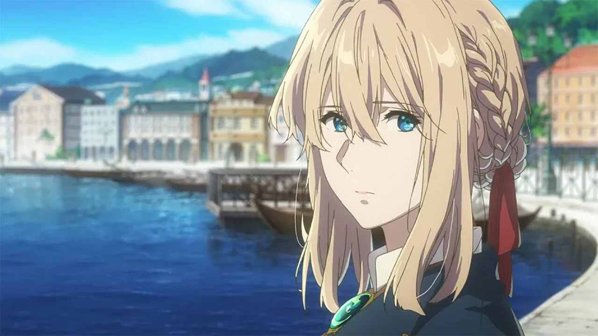
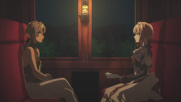
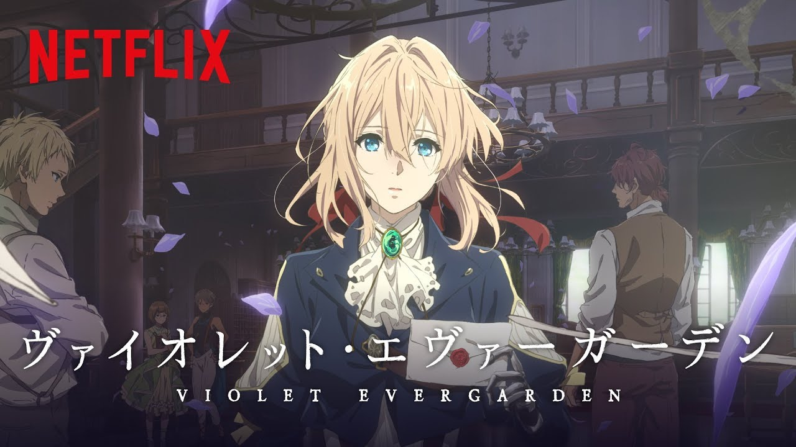

Krása psaného slova
Violet se učí zachytit lidské emoce a přenášet je na papír skrze dojemné dopisy.

Temná minulost
Její život vojačky ovlivnil její pohled na svět – postupně se učí chápat emoce a ztrátu.

Přátelství a uzdravení
Na své cestě potkává mnoho lidí, kteří jí pomáhají najít vlastní identitu a mír.

Kde sledovat?
Anime Violet Evergarden je dostupné na Netflixu s českými titulky.